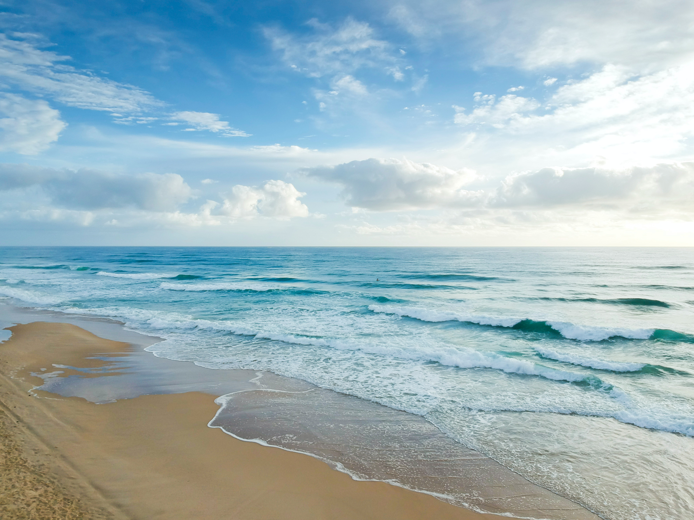
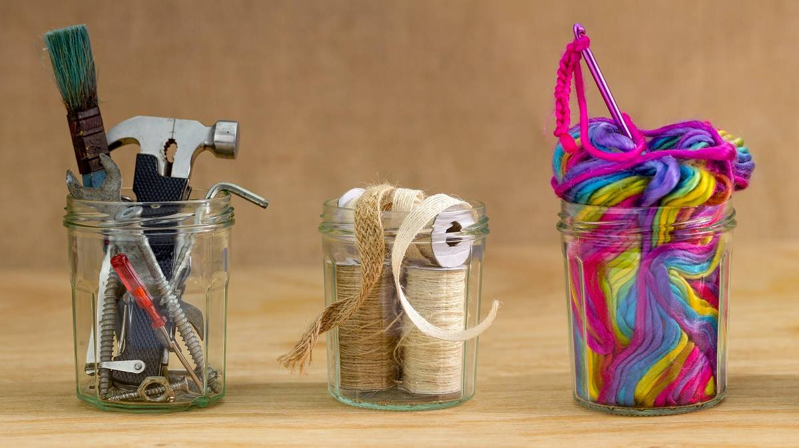

Plants and Environment

One big thing we can do for this Earth is to plant trees. We've already cut down over a million trees, why not try and replace those we've taken down. It'll help clean the environment and a tree can even be a source of food! One such content creator, Mr.Beast, started a movement called Team Trees. They have planted over 20 million trees around the world! 1 dollar is equal to 1 tree planted so go on ahead and donate if you can!
Seas and Oceans
Our oceans are a wonder to see. There are millions of species of sea animals in our seas, and if we do not keep it clean, they may die out. We must not throw our waste into the ocean and possibly participate in beach clean-ups. Mr.Beast, together with Mark Rober, have started another movement called Team Seas. Over 13 million pounds of trash have already been cleaned up. As before, for every 1 dollar, a pound of trash is removed. Let us protect our waters!
Trash and Things
We humans produce roughly 4.40 pounds of trash every day. What better way to use the trash than to recycle them! We can recycle bottles to turn them into plant pots, or newspapers into wrapping paper. Get creative if you want to use them for arts and crafts! The more we reuse, the more we save!